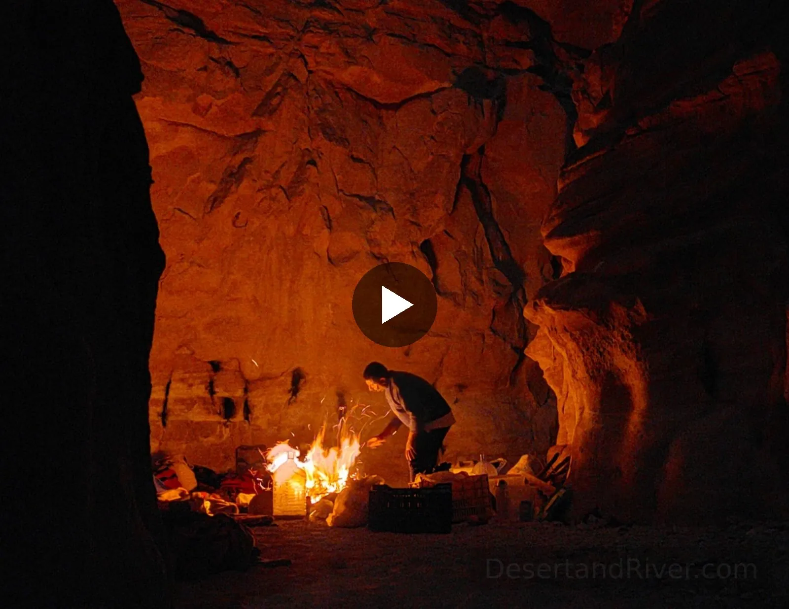
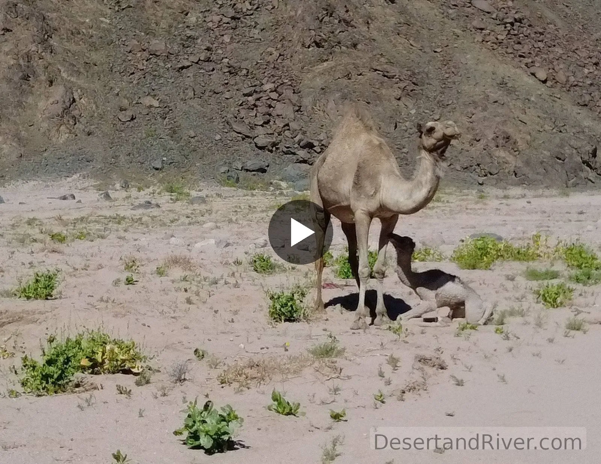

أمثلة على الرحلات
نقطة بداية، ودائمًا حسب الطلب
هذه الرحلات موجودة لتساعدك على تخيّل الحجم والإيقاع. كل تجربة تُصاغ حولك: وقتك، وإيقاعك، والظروف على الأرض.

مقدمة غامرة
تجربة اليوم الواحد
300 يورو أو 21,000 جنيه
مثالية للمستكشفين الفضوليين لأول مرة: وقت في الصحراء، وحكايات، وإيقاع أهدأ بعيدًا عن دهب.
تمتد تجربة اليوم الواحد عادةً من نحو 9:00 صباحًا إلى 5:00 مساءً.
يشمل اليوم:
- التنقل بـسيارة دفع رباعي أو سيارة عادية
- ركوب الجمال اختياريًا
- الغداء والوجبات الخفيفة والماء والشاي التقليدي
- مرشد يتحدث الإنجليزية
- سائق
- طاهٍ يحضّر طعامًا طازجًا في اليوم نفسه
- كل التصاريح ورسوم المواقع
مثال على تجربة اليوم الواحد: تبدأ بزيارة منطقة ترى فيها نقوشًا قديمة محفورة في الصخور. ومن هناك قد تتابع إلى تلّ الحفريات القريب، قبل أن تدخل واديًا للمشي والتنزه والتسلق الخفيف.
بينما تستكشف، يحضّر الطاهي غداءً مطبوخًا طازجًا. وفي طريق العودة قد تتوقف عند مقابر يزيد عمرها على 5000 عام قبل العودة نحو الخامسة مساءً.
خيار آخر قد يشمل زيارة النقوش والحفريات والأدوات القديمة، ثم استكشاف وادٍ أصغر. وبعدها قد تتابع إلى جبل رأس التنين للغداء والتصوير والوقت بين الكثبان الرملية.
بعد الغداء يمكنك زيارة الكثبان القريبة للتزلج على الرمال أو اللعب في الرمل أو مجرد الاسترخاء قبل العودة.
يمكن أيضًا إضافة تجارب الجمال: جولة قصيرة أو رحلة أطول وأبطأ عبر الوديان.
كل تجارب اليوم الواحد مرنة ويمكن تعديلها.

تعمّق أكثر
رحلة مع مبيت
600 يورو أو 42,000 جنيه
مناظر متبدلة، ومخيمات نائية، وليالٍ تحت السماء المرصعة بالنجوم، مع مساحة للتكيّف والراحة.
الرحلة مع المبيت تتيح لك أن تعيش الصحراء بالكامل، فتقضي ليلة أو أكثر في مكان ناءٍ. تبدأ الرحلة عادةً نحو التاسعة صباحًا وتعود في اليوم التالي نحو الخامسة مساءً.
تشمل التجربة:
- التنقل بـسيارة دفع رباعي
- ركوب الجمال اختياريًا مع سيارة مرافقة
- كل معدات التخييم
- كل الوجبات
- وجبات خفيفة وماء وشاي وقهوة
- مرشد يتحدث الإنجليزية وسائق بدوي
- طاهٍ يحضّر طعامًا طازجًا
- كل التصاريح ورسوم المواقع
مثال على رحلة: تبدأ بالقيادة إلى الصحراء لاستكشاف النقوش القديمة والبحث عن الحفريات. ومن هناك قد تدخل واديًا للمشي والتسلق، قبل التوقف لغداء يحضّره الطاهي.
في فترة ما بعد الظهر تتوغل أعمق في الصحراء إلى مخيم الليل. أحد الخيارات وادي الزجزاج: مكان ضيق ومحمي تخيّم فيه محاطًا بضوء الشموع.
بعد العشاء يمكنك الاسترخاء عند النار أو الخروج للاستمتاع بسماء الليل.
يبدأ الصباح التالي بالإفطار ثم تستمر الرحلة. قد تزور مقابر يزيد عمرها على 5000 عام، وتتوقف عند جبل رأس التنين، وتقضي وقتًا في الكثبان الرملية.
كل رحلة مع مبيت مرنة ومصممة حسب الطلب.

لمن يريد المسافات الطويلة
رحلة الثلاثين يومًا
9000 يورو أو 630,000 جنيه
رحلة بطيئة عبر الوديان والواحات وتقاليد الرحّل، تصوغها الظروف والإذن.
هذه تجربة غامرة بالكامل. تسافر بإيقاع طبيعي، وتقيم في أماكن نائية، يرشدك علم أهل المكان وإيقاع الأرض نفسها.
رحلات صحراوية متعددة الأيام وطويلة تجاربنا الصحراوية لا تقتصر على أيام قليلة، بل يمكن أن تمتد بقدر ما تشاء. سواء كانت هروبًا قصيرًا لخمسة أيام أو انغماسًا كاملًا لمدة تصل إلى 30 يومًا، فهذه الرحلات مرنة تمامًا. يمكنك أن تقضي وقتك في المشي عبر مساحات صحراوية شاسعة، أو السفر على الجمال، أو الاستكشاف بسيارة الدفع الرباعي، أو مزيج من الثلاثة. ما الذي يشمله البرنامج يبقى الهيكل متشابهًا مهما كان طول رحلتك، لكن التجربة تتعمق مع الوقت. يبدأ كل يوم عادةً نحو التاسعة صباحًا. ثم تسافر عبر الصحراء، مشيًا أحيانًا، وبالجمل أو الجيب أحيانًا، حسب التضاريس وتفضيلك. يسير اليوم المعتاد هكذا: الصباح: سفر لساعتين أو ثلاث الظهيرة: توقف للراحة والشاي والغداء بعد الظهر: متابعة لساعتين أخريين المساء: الاستقرار في المخيم قبل الغروب، والعشاء معًا، والاسترخاء حول النار يبدأ الصباح التالي مبكرًا، عادةً بين الخامسة والسادسة، بالإفطار قبل الانطلاق من جديد. إيقاع طبيعي بعد أيام قليلة تبدأ في الدخول في إيقاع حياة الصحراء: بسيطة، تعيدك إلى الأرض، ومريحة بعمق. بالنسبة لكثيرين، رحلة من خمسة إلى ستة أيام هي التوازن المثالي. فهي تمنح وقتًا كافيًا للانفصال حقًا عن العالم الخارجي والاتصال الكامل بالصحراء. لا إشارة هاتف. لا مشتتات. فقط أنت والمكان والتجربة. الراحة في الرحلات الطويلة في الرحلات الطويلة نخطط المسارات بعناية لضمان الوصول المنتظم إلى الماء ونقاط الراحة. كل ثلاثة إلى أربعة أيام نصل إلى واحة يمكنك فيها: الاغتسال والانتعاش تغيير الملابس الراحة بعمق أكبر وهناك أيضًا أماكن مثل سرابيط الخادم يمكن البقاء فيها عدة ليالٍ. وقد توفر هذه الأماكن راحة إضافية مثل: دشات ودورات مياه مراتب حقيقية قاعدة ثابتة لاستكشاف المنطقة المحيطة والبقاء في مكان واحد بضعة أيام يعني أيضًا تعبئة وتفريغًا أقل، فتسترخي تمامًا وتستكشف على مهل. استكشاف مرن بعض الأيام ننقل فيها المخيم، وفي أيام أخرى نبقى في مكان واحد مع رحلات يومية إلى الجبال أو الوديان أو السهول الصحراوية المحيطة. مناطق مثل وادي ديسكو أو جبال سيناء تسمح بهذا النوع من الاستكشاف المرن، مع العودة إلى المخيم نفسه كل مساء. التجربة قضاء وقت طويل في الصحراء يغيّر شيئًا ما. الجلوس حول النار ليلًا. استنشاق رائحة دخان الحطب. الاستيقاظ مع الشمس والنوم تحت النجوم. إنها فرصة نادرة للابتعاد عن العالم الحديث والتواصل من جديد مع شيء أكثر حقيقية. وشيء واحد لا داعي للقلق بشأنه؟ لن تكون رائحتك سيئة. فبعد أيام قليلة تصبح رائحة الجميع مثل النار على أي حال.
لا توجد رحلة ثابتة. هذه مجرد نقاط بداية، وتجربتك ستُصاغ حولك.
احجز مكالمة لتصميم رحلتك